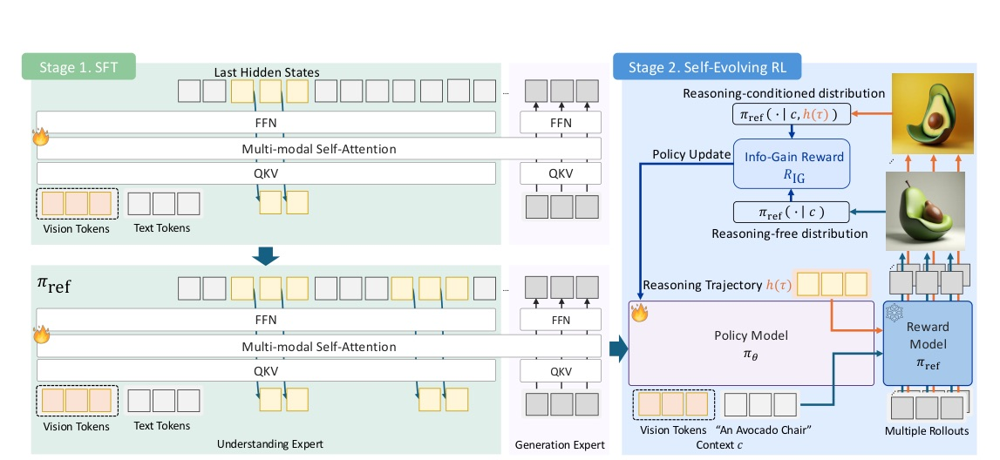
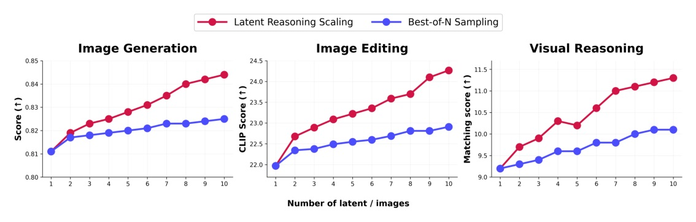
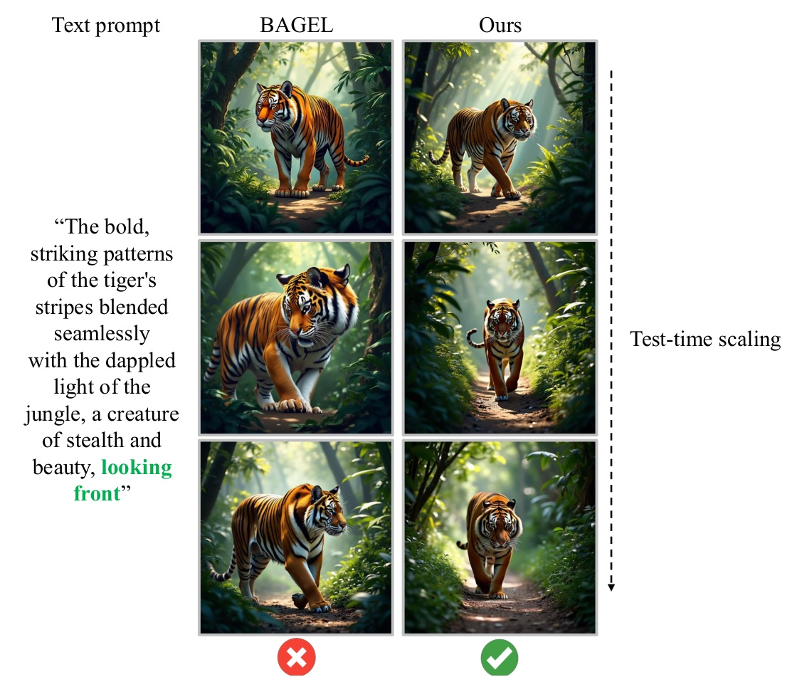

Venue：PDF p.1 頁尾「40th Conference on Neural Information Processing Systems (NeurIPS 2026)」；arXiv comment「Published as conference proceeding for NeurIPS 2026」· Project：rootyjeon.github.io/larc-umm · Reviewer 資料：未抓取
UMM 的 CoT 在離散 token 裡推理，影像卻在連續空間生成 —— 所以推理加長也不會畫得更好。LARC 把 last hidden state 直接當下一步輸入，讓推理留在連續空間；用 curriculum SFT + information-gain 自獎勵 RL 訓練。BAGEL 上 GenEval 0.81 → 0.88，並且是第一個推理越多、分數單調變高的 reasoning UMM。

算力：8× A100，Stage 1 約 300 GPU-hours、Stage 2 約 96 GPU-hours。
| Method | Two Obj. | Counting | Position | Attr. Bind. | Overall |
|---|---|---|---|---|---|
| GPT-4o | 0.92 | 0.85 | 0.75 | 0.61 | 0.84 |
| Janus-Pro | 0.89 | 0.59 | 0.79 | 0.66 | 0.80 |
| BAGEL（base） | 0.94 | 0.80 | 0.64 | 0.63 | 0.81 |
| Uni-CoT | 0.96 | 0.84 | 0.57 | 0.71 | 0.83 |
| LARC（ours） | 0.98 | 0.86 | 0.77 | 0.78 | 0.88 |
| Method | DPG Relation | DPG Overall | OneIG Long | OneIG Overall |
|---|---|---|---|---|
| Show-o2 | 91.81 | 86.14 | 0.807 | 0.811 |
| BAGEL（base） | 90.82 | 85.07 | 0.759 | 0.764 |
| Uni-CoT | 91.09 | 85.56 | 0.776 | 0.790 |
| LARC（ours） | 94.70 | 90.04 | 0.840 | 0.866 |
| CompBench | BAGEL | LARC |
|---|---|---|
| LC-T ↑ | 20.434 | 22.509 |
| LC-I ↑ | 0.842 | 0.880 |
| PSNR ↑ | 24.370 | 25.710 |
| SSIM ↑ | 0.917 | 0.953 |
| LPIPS ↓ | 0.069 | 0.049 |
Table 4, p.7
| 理解 | BAGEL | Uni-CoT | LARC |
|---|---|---|---|
| MME | 1687.0 | 1691.7 | 1725.3 |
| MMB | 85.0 | 85.4 | 88.1 |
| MMMU | 55.3 | 55.5 | 56.2 |
| MIRA | 7.5 | 10.6 | 11.7 |
Table 5, p.7

| 每張耗時（A100, bs=1） | 1 | 4 | 10 |
|---|---|---|---|
| BAGEL + Best-of-N（N 張） | 46.5 s | 187.1 s | 469.0 s |
| LARC（L 個 latent） | 46.8 s | 47.0 s | 48.0 s |
增益來自推理的空間，而不只是「多想一點」：同一個 base 上，token-level CoT 在 MIRA 反而退步（7.5 → 7.1），只做 SFT 的 latent reasoning 就到 9.7。latent 推理只延長 understanding expert 的一小段 forward，所以 10 個 latent 只多 1.2 秒；best-of-N 則要整個 generation expert 重跑 N 次。
| Method | 空間 | T2I | Comp. gen | Editing | Visual reas. |
|---|---|---|---|---|---|
| Baseline（BAGEL） | — | 0.81 | 0.76 | 20.43 | 7.5 |
| Token-level CoT | 離散 | 0.82 | 0.79 | 20.81 | 7.1 |
| Latent（Stage 1） | 連續 | 0.83 | 0.81 | 21.46 | 9.7 |
T2I = GenEval、Comp. gen = OneIG-Bench、Editing = CompBench LC-T、Visual reas. = MIRA。表中 Baseline 列在原表標為 Discrete。
| Method | T2I | Comp. gen | Editing | Visual reas. |
|---|---|---|---|---|
| Baseline（BAGEL） | 0.81 | 0.76 | 20.43 | 7.5 |
| Naive latent（無 text span） | 0.83 | 0.79 | 21.02 | 9.9 |
| Interleaved（Stage 1） | 0.83 | 0.81 | 21.46 | 9.7 |
| Interleaved（Stage 1 + 2） | 0.88 | 0.87 | 22.51 | 11.7 |
| λdiv | Cos. Sim. | GenEval | OneIG | MIRA |
|---|---|---|---|---|
| 0.0 | 0.97 | 0.83 | 0.81 | 9.8 |
| 0.05 | 0.87 | 0.85 | 0.84 | 10.9 |
| 0.1（ours） | 0.79 | 0.88 | 0.87 | 11.7 |
| 0.2 | 0.71 | 0.85 | 0.85 | 11.4 |
| 0.5 | 0.65 | 0.82 | 0.82 | 10.6 |

此頁為編者推論，已與論文內容分開標示。
We argue that this failure stems from a fundamental modality mismatch: reasoning is performed in a discrete token space, whereas image generation operates in a continuous latent space.
我們認為失敗源自根本的模態錯配：推理在離散 token 空間進行，影像生成卻在連續 latent 空間運作。§1, p.1
Equation 1 assigns reward exactly when the trace raises likelihood of the target image in reference model, and zero reward when the trace carries no information beyond the context c.
式 (1) 只在推理軌跡提高參考模型對目標影像的似然時給獎勵；若軌跡沒有帶來 context c 以外的資訊，獎勵為零。§2.4, p.5
Crucially, the constant C(x) cancels exactly when the two flow-matching losses are evaluated under the same noise sample η ∼ N(0, I) and the same time step t.
關鍵在於：當兩個 flow-matching loss 在同一個 noise 樣本 η 與同一個時間步 t 下評估時，常數 C(x) 會精確相消。App. C.2, p.18
Latent reasoning extends only a small portion of the forward pass through the understanding expert, whereas best-of-N requires repeated invocation of the full generation expert.
latent 推理只延長 understanding expert 的一小段 forward；best-of-N 則需要反覆呼叫整個 generation expert。App. D.1, p.19
來源：arXiv 2610.42149 · NeurIPS 2026 · Latent Reasoning in Continuous Space for Unified Multimodal Models